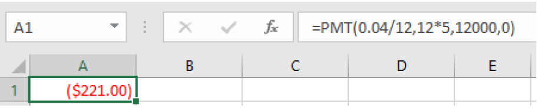

In a savings plan, you start with nothing, put money into an account once or on a regular basis, and have a larger balance at the end. Loans work in reverse. You start with a balance owed, make payments and the future value is zero when the loan is paid off.
We will continue to use the same spreadsheet formulas. The ones that are most useful for loans are =PV and =PMT. We will look at how the inputs change for a loan.
These two formulas correspond to the formulas below. The formula for loans is derived in a similar way that we did for savings plans, but notice they have negative exponents. The details are omitted here.
Example 2.4.2.
Teresa wants to buy a car that costs $15,000. She has $3,000 saved for the car and plans to finance the rest. She found a 3-year loan at 2.75% APR and a 5-year loan at 4% APR. How much will her monthly car payment be for each loan and how do these loans compare to each other.
To use a spreadsheet, we use the =PMT formula. For a loan, the loan amount is the present value and the future value is 0, indicating that the loan will be paid off. Teresa is making a down payment, so we also need to subtract that from the cost of the car to find the loan amount:
\(\$15,000 – \$3,000 = \$12,000\)
Her loan amount is $12,000. For the 3-year loan at 2.75% APR, we enter:
=PMT(0.0275/12, 12*3, 12000, 0)
and get a result of $347.65.
For the formula, we use the one solved for \(d\text{:}\)
\(r=.0275\text{,}\) for 2.75% annual rate
\(n=12\text{,}\) monthly payments
\(t=3\text{,}\) for 3 years
\(P=12000\text{,}\) since she can pay $3,000 of the $15,000
\begin{align*}
d\amp=\frac{P\left(\frac{r}{n}\right)}{\left(1-\left(1+\frac{r}{n}\right)^{-nt}\right)}\\
\amp=\frac{12000\left(\frac{0.0275}{12}\right)}{\left(1-\left(1+\frac{0.0275}{12}\right)^{-12\cdot 3}\right)}\\
\amp\approx\$347.65
\end{align*}
Teresa’s car payment would be $347.65.
Now for the 5-year loan at 4% APR, we enter:
=PMT(0.04/12, 12*5, 12000, 0)
and we get $221.00.

To use the formula, we have:
\(r=.04\text{,}\) for 4% annual rate
\(n=12\text{,}\) monthly payments
\(t=5\text{,}\) for 5 years
\(P=12000\text{,}\) the loan amount
\begin{align*}
d\amp=\frac{P\left(\frac{r}{n}\right)}{\left(1-\left(1+\frac{r}{n}\right)^{-nt}\right)}\\
\amp=\frac{12000\left(\frac{0.04}{12}\right)}{\left(1-\left(1+\frac{0.04}{12}\right)^{-12\cdot 3}\right)}\\
\amp\approx\$221.00
\end{align*}
Now let’s compare the loans by finding out how much Teresa would pay in interest for each loan.
For the 3-year loan at 2.75% APR, her payments would total:
\(\$347.65(12)(3)=\$12,515.40\text{.}\) Her interest would be $515.40.
For the 5-year loan at 4% APR, her payments would total:
\(\$221.00(12)(5)=\$13,260.00\text{.}\) Her interest would be $1,260.00.
There are two main differences between these two loans: the monthly payments and the total paid over the life of the loans. The first loan has a higher monthly payment by $126.65 per month. However, she would pay $744.60 less in interest.
In addition to loan payments, we can calculate the amount of loan we can afford given a monthly payment. Let’s look at that in the next example.
So far, we have looked at car loans. Student loans and home mortgages are calculated in the same way. Here is an example of a mortgage payment.